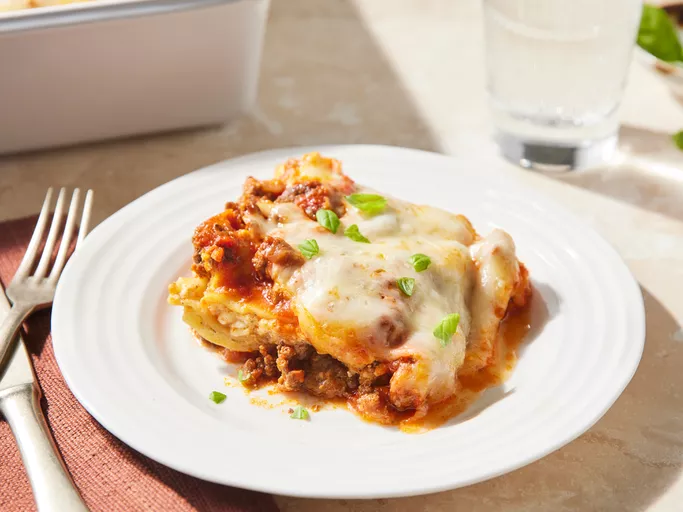

Lasagna Recipe

Description
This classis lasagna is cheesy, saucy and comforting. It layers
riche meat sauce, creamy béchamel (or ricotta), and gooey melted cheese
between tender lasagna sheets. Perfect for family dinners or a satisfying
solo meal with leftovers for days!
Ingredients
- For the meat sauce:
- 2 tablespoons oil
- 1 medium onion, chopped
- 2-3 garlic cloves, minced
- 250-300g chicken [or skip for vegetarian version]
- 1 can (400g) crushed tomatoes or tomato puree
- 2 tablespoons tomato ketchup (for a slight sweetness)
- 1 teaspoon dried oregano or mixed Italian herbs
- Salt and pepper to taste
- For the creamy layer:
- 1 cup of ricotta cheese or fresh cream
- 1 egg(if using ricotta), pinch of nutmeg(Optional)
- 6-8 lasagna sheets
- 1 to 1.5 cups shredded mozzarella cheese
- Grated parmesan(optional but yum!)
Steps:
- Make the meat sauce:
- Heat oil in a pan, saute onions till soft.
- Add garlic and cook for 30 seconds.
- Add the ground meat(if using), cook till browned.
- Add tomatoes, herbs, ketchup, salt, and pepper. Let it simmer for 10-15 mins until
thick and rich.
- Prepare creamy layer:
- If using ricotta: Mix ricotta with an egg, salt, and pepper.
- If making bechamel: Melt 2 tbsp butter, stir in 2 tbsp flour, then slowly whisk
in milk until smooth. Cook until slightly thick. Season with salt, pepper, and a pinch of nutmeg.
- Assembly:
In a baking dish:
- Layer-1: A bit of meat sauce at the bottom
- Layer-2: Lasagna sheets
- Layer-3: Meat sauce
- Layer-4: Ricotta/bechamel
- Repear layers. Top with mozzarella and parmesan.
- Rest & Serve:
Let the lasagna rest for 10 minutes before slicing. Serve with garlic bread or a simple salad!